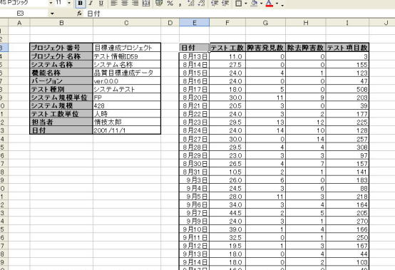
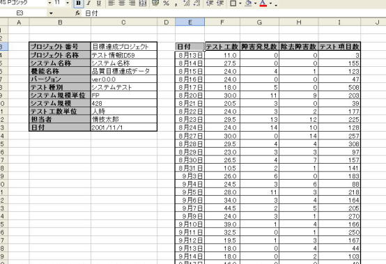

▼目次
ツールの使用例
 フォールトデータ
フォールトデータ
ここの例では（株）構造計画研究所が作成している「信頼度成長曲線作成ツール」で配布されいるサンプルデータを使用します．フォールトデータは Excel 上で図１のようにまとめられているものとします（フォールトデータサンプルのダウンロード）．ここの例では，フォールトデータは日単位の集計であり，それぞれ次の項目からなっています．
- テスト日付
- テスト工数
- 発見障害数
- 修正障害数
- 消化したテスト項目数
図１：フォールトデータ


データの整形
SRATS では累積時刻（工数）を利用するので，Excel 上でフォールトデータの整形を行います．ここの例では，日単位のテスト工数から累積のテスト工数を作成しています（図２）．また，日単位の消化テスト項目数から累積消化テスト項目数を作成して利用することも可能です．次に，工数と日単位の発見フォールト数に関する２列を選択してメニューバーの SRATS から RunSRATS を選択します．
図２：データ整形
モデル選択
選択したフォールトデータに適用するモデルを選択します．一般的には，最も基本的な「Exponential
SRM」を最初に選択＆パラメータ推定を行います．次に Exponential SRM の適合度
AIC と対比しながら，他のモデルを追加していきます．このときの作業は
- 「Add」でモデルを追加
- AIC で適合度の比較
- AIC のより小さいものを選択し，他を「Remove」で削除
図３：モデル比較＆選択
評価と管理
モデルの選択が完了した後は，結果を Excel シートへ出力します（図４）．ここでの評価は
- 現時点で残っているフォールトが 0.17 個（=96.17-96）
- 現時点でフォールトがすべて除去されている確率が 0.84
- 次のフォールトが発見されるならば 17.8 人時（テスト工数）後
- 次のフォールトが発見されるならば 96.2 人時後までに発見される確率が 0.9
- 該当ソフトウェアは十分な信頼度を達成しているので，追加のテストは必要としない
- 17.8 人時あるいは 96.2 人時の追加テストを行う
図４：評価結果